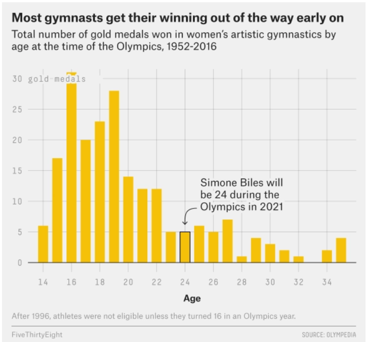
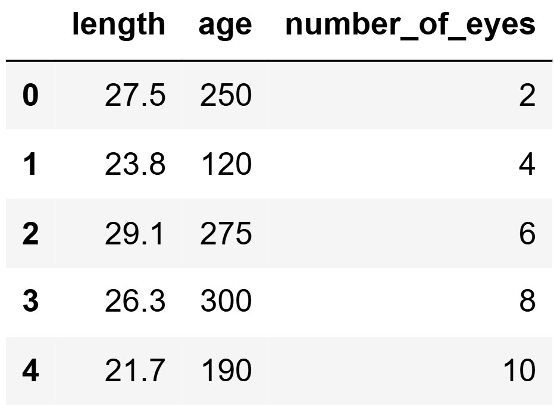
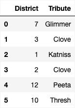
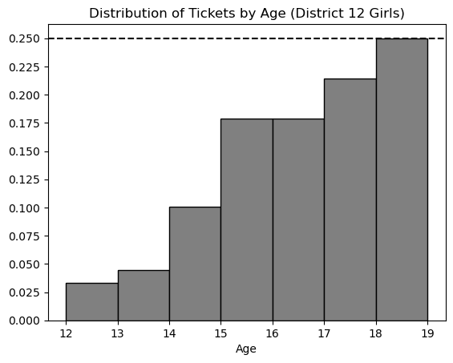

Below are practice problems tagged for Lecture 15
(rendered directly from the original exam/quiz sources). By default,
problems are sorted from easiest to hardest by average score; problems
without a score are listed last.
A sleepy cat is a cat that naps for at least 5 hours. You want to
estimate the proportion of all sleepy cats that
consumed at least 10 treats, based on the data in cats.
Problem 2.1
Fill in the blanks below to generate an array of 10000 bootstrapped
estimates for this proportion.
estimates = np.array([])
subset = cats[__(a)__]
for i in np.arange(10000):
resample = __(b)__
proportion = __(c)__ / __(d)__
estimates = np.append(estimates, proportion)
Fill in the blanks below so that treats_interval
evaluates to a 90% confidence interval for the true proportion of all
sleepy cats that consumed at least 10 treats.
According to Chebyshev’s inequality, at least 80% of San Diego
apartments have a monthly parking fee that falls between $30 and
$70.
Problem 3.1
What is the average monthly parking fee?
Answer:\$50
We are given that the left and right bounds of Chebyshev’s inequality
are $30 and $70 respectively. Thus, to find the middle of the two, we
compute the following equation (the midpoint equation):
\frac{\text{right} +
\text{left}}{2}
\frac{70 + 30}{2} = 50
Therefore, 50 is the average monthly
parking fee.
Difficulty: ⭐️
The average score on this problem was 92%.
Problem 3.2
What is the standard deviation of monthly parking fees?
\frac{20}{\sqrt{5}}
\frac{40}{\sqrt{5}}
20\sqrt{5}
20\sqrt{5}
Answer:\frac{20}{\sqrt{5}}
Chebyshev’s inequality states that at least 1 - \frac{1}{z^2} of values are within z standard deviations of the mean. In
addition, z can be represented as \frac{\text{bound} - \text{mean of x}}{\text{SD of
x}}.
Therefore, we can set up the equation like so: \frac{4}{5} = 1 - \frac{1}{(\frac{\text{bound} -
\text{mean of x}}{\text{SD of x}})^2}
Then, we can solve: \frac{1}{5} =
\frac{1}{(\frac{\text{bound} - \text{mean of x}}{\text{SD of
x}})^2}
Now since we know both bounds, we can plug one of them in. Since the
mean was computed in the earlier step, we also plug this in.
\frac{1}{5} = \frac{1}{(\frac{70 -
50}{\text{SD of x}})^2}5 =
(\frac{20}{\text{SD of x}})^2\sqrt{5}
= \frac{20}{\text{SD of x}}\text{SD
of x} = \frac{20}{\sqrt{5}}
The data visualization below shows all Olympic gold medals for
women’s gymnastics, broken down by the age of the gymnast.

Problem 5.1
Based on this data, rank the following three quantities in
ascending order: the median age at which gold medals
are earned, the mean age at which gold medals are earned, the standard
deviation of the age at which gold medals are earned.
mean, median, SD
median, mean, SD
SD, mean, median
SD, median, mean
Answer: SD, median, mean
The standard deviation will clearly be the smallest of the three
values as most of the data is encompassed between the range of
[14-26]. Intuitively, the standard deviation will have to
be about a third of this range which is around 4 (though this is not the
exact standard deviation, but is clearly much less than the mean and
median with values closer to 19-25). Comparing the median and mean, it
is important to visualize that this distribution is skewed right. When
the data is skewed right it pulls the mean towards a higher value (as
the higher values naturally make the average higher). Therefore, we know
that the mean will be greater than the median and the ranking is SD,
median, mean.
Difficulty: ⭐️⭐️⭐️
The average score on
this problem was 72%.
Problem 5.2
Which of the following is larger for this dataset?
the difference between the 50th percentile of ages and the 25th
percentile of ages
the difference between the 75th percentile of ages and the 50th
percentile of ages
both are the same
Answer: the difference between the 75th percentile
of ages and the 50th percentile of ages
Since the distribution is right skewed, the 75th percentile will have
a larger difference from the 50th percentile than the 25th percentile.
With right skewness, values above the 50th percentile will be more
different than those smaller than the 50th percentile (and thus more
spread out according to the graph).
The DataFrame restaurants contains information about a
sample of restaurants in San Diego County. We have each restaurant’s
"name" (str), "rating" (int), average
"meal_price" (float), and type of
"cuisine" (str), such as "Thai" or
"Italian".
Problem 6.1
You are interested in estimating the average
"meal_price" across all Italian restaurants in San Diego
County using only the data in restaurants. Fill in the
following code so that italian_means evaluates to an array
of 1000 bootstrapped estimates for this parameter.
def bootstrap_means(data, n_samples): means = np.array([])for i inrange(n_samples): resample = data.sample(__(a)__, replace = __(b)__) means = np.append(means, __(c)__)return means italian_restaurants = __(d)__ italian_means = bootstrap_means(italian_restaurants, __(e)__)
Next, fill in the blanks below so that italian_CI
evaluates to an 88% bootstrapped confidence interval for the average
"meal_price" across all Italian restaurants in San Diego
County.
Suppose italian_CI evaluates to [25, 35]. Which of the
following statements are correct? Select all that apply.
If we randomly selected 1000 Italian restaurants from the population
of Italian restaurants in San Diego County, about 880 of them will have
an average "meal_price" between $25 and $35.
There is an 88% chance that the average "meal_price" of
Italian restaurants in San Diego County falls between $25 and $35.
88% of all Italian restaurants have an average
"meal_price" between $25 and $35.
The DataFrame space_reptiles contains 1000 rows of
information about all space reptiles living on
Statistica, which we’ll think of as a population. For each reptile, we
have its "length" in meters, "age" in years,
and "number_of_eyes". The first five rows of
space_reptiles are shown below.

Problem 8.1
Fill in the blanks in the sample_of_reptiles function.
The function has two parameters, "sample_size" (int), which
will be a positive integer, and "column" (str), which will
be the name of one of the columns in space_reptiles. The
function should take a sample of reptiles from
space_reptiles, with replacement, of the
specified size, and return the average value in the given column for the
sample.
True or False: The function call
sample_of_reptiles(1000, "length") is an example of
bootstrapping.
Answer: False
Difficulty: ⭐️⭐️
The average score on this problem was 77%.
Problem 8.3
Calculate the variance of the data in the first five
rows of the "number_of_eyes" column of
space_reptiles: 2, 4, 6, 8, 10. Give your answer as an
integer.
Answer: 8
Difficulty: ⭐️⭐️⭐️
The average score on this problem was 50%.
Problem 8.4
Suppose the next row in the "number_of_eyes" column
contains 6. If we add this value to our dataset and then recompute the
variance, it would...
decrease because the new value is less than the greatest value
decrease because the new value is equal to the mean.
remain the same because the new value is equal to the median.
increase because the data set has more values than it did
increase because the new value is a positive number.
Answer: decrease because the new value is equal to
the mean.
Suppose we have access to a simple random sample of all US Costco
members of size 145. Our sample is stored in a
DataFrame named us_sample, in which the
"Spend" column contains the October 2023 spending of each
sampled member in dollars.
Problem 9.1
Fill in the blanks:
"The average of the "Spend" column in us_sample is a ____,
while the average October 2023 spending of all US members is a ____."
sample statistic; population parameter
population statistic; sample parameter
sample parameter; population statistic
population parameter; sample statistic
Answer: sample statistic; population parameter
A number computed from a sample (the average of the
"Spend" column in us_sample) is a
statistic. A number that describes the entire
population (the average spending of all US members) is
a parameter.
Difficulty: ⭐️
The average score on this problem was 94%.
Problem 9.2
Fill in the blanks below so that us_left and
us_right are the left and right endpoints of a
46% confidence interval for the average October 2023
spending of all US members.
costco_means = np.array([])for i in np.arange(5000): resampled_spends = __(x)__ costco_means = np.append(costco_means, resampled_spends.mean())left = np.percentile(costco_means, __(y)__)right = np.percentile(costco_means, __(z)__)
Which of the following could go in blank (x)? Select all that
apply.
To bootstrap, we resample from our original sample, with
replacement, using the same size as the original sample
(145).
us_sample.sample(145, replace=True).get("Spend") is
correct.
us_sample.sample(145, replace=False).get("Spend") is
incorrect. Sampling 145 rows without replacement from 145 rows just
reshuffles the sample, so every resample has the same mean.
np.random.choice(us_sample.get("Spend"), 145) is
correct, since np.random.choice samples
with replacement by default.
np.random.choice(us_sample.get("Spend"), 145, replace=True)
is correct.
np.random.choice(us_sample.get("Spend"), 145, replace=False)
is incorrect, for the same reason as the second option.
For a 46% confidence interval, we want the middle 46% of the
bootstrapped means. That leaves 100\% - 46\% =
54\% in the tails, or 27% in each tail. So the left endpoint is
the 27th percentile and the right endpoint is the 100 - 27 = 73rd percentile.
Difficulty: ⭐️⭐️
The average score on this problem was 79%.
Problem 9.3
True or False: 46% of all US members in
us_sample spent between left and
right in October 2023.
True
False
Answer: False
The interval is a confidence interval for the population
mean (the average spending of all US members). It says nothing
about what fraction of individual members’ spending falls between
left and right.
Difficulty: ⭐️⭐️
The average score on this problem was 85%.
Problem 9.4
True or False: If we repeat the code from part (b) 200 times, each
time bootstrapping from a new random sample of 145 members drawn from
all US members, then about 92 of the intervals we
create will contain the average October 2023 spending of all US
members.
True
False
Answer: True
This is the correct interpretation of a confidence interval. If we
repeatedly draw a new random sample from the population, bootstrap from
it, and build an interval, about 46% of those intervals will contain the
population mean. Since 0.46 \times 200 =
92, about 92 of the 200 intervals will contain the average
spending of all US members.
Difficulty: ⭐️⭐️⭐️
The average score on this problem was 51%.
Problem 9.5
True or False: If we repeat the code from part (b) 200 times, each
time bootstrapping from us_sample, then about
92 of the intervals we create will contain the average
October 2023 spending of all US members.
True
False
Answer: False
The difference from the previous part is that here we bootstrap from
the sameus_sample every time. Each
interval is built from the same sample, so all 200 intervals will be
nearly identical (centered around the same sample mean). Either almost
all of them will contain the population mean or almost none will,
depending on whether this one sample happened to be representative. The
“about 46%” interpretation only works when each interval comes from a
new random sample from the population.
The night before the Hunger Games begins, each tribute is interviewed
in front of a live audience. During this interview, the host asks each
tribute a few personal questions and reveals their overall score from
the training camp. These interviews are broadcast across the country, so
that the residents of Panem can get to know the tributes better and form
opinions about who they want to win.
The Capitol wants to understand public perceptions of the tributes
after the interviews for the 74th Hunger Games. They conduct a survey of
a sample of residents from all 12 districts, asking them two
questions:
“What district do you live in?"
“Who do you think will win this year’s Hunger Games?"
The survey results are in the DataFrame survey, with
columns "District" and "Tribute" which contain
each person’s answers to the two questions above. The first few rows of
survey are shown below.

In this problem, we will try to estimate the proportion of residents
from a given district who think a certain tribute will win the Hunger
Games.
Problem 10.1
What proportion of residents in District 11 think Peeta will win?
Write one line of code that evaluates to this
proportion in our sample, based on the data in
survey.
This question is just a whole lot of querying. For the numerator we
want all the people who answered the survey who are from district 11 and
votes for Peeta. We can do this by querying on those two conditions and
taking the shape. For the denominator we want all the people from
district 11 who answered the survey, so we query for that in the
denominator and take the shape.
Difficulty: ⭐️⭐️
The average score on this problem was 78%.
Problem 10.2
Next, we want to create a 95% confidence interval for the proportion
of all residents from a given district who think a
certain tribute will win. Fill in the blanks in the function
win_CI below. This function takes the name of a tribute and
the number of a district and returns the endpoints of a 95% bootstrapped
confidence interval for the proportion of all residents of that district
who think that tribute will win, based on the data in
survey.
For example win_ci("Peeta", 11) returns the endpoints of
a 95% confidence interval for the proportion of all residents from
District 11 who think Peeta will win.
For the first blank we have to create a bootstrapped sample from just
the rows in the given district. We sample with replacement here as we do
when we bootstrap to keep the same number of rows. That being said we
use the .sample function with replacement to get our sample
from the only_district dataframe containing the rows in the
given district. Within our sample we want the number of rows to be the
same size as the only_district dataframe. so we set the
size argument to be only_district.shape[0].
Now we want to find how many times the given tribute appears in the
bootstrapped sample. To do that we query the dataframe for the given
tribute and the take the size of our query using
.shape[0].
(c): resample.shape[0]
The denominator of our resample is just the total number of people in
the resample. That being said to fill this blank all we need to do is
use .shape[0] to take the size of the resample.
Difficulty: ⭐️⭐️⭐️
The average score on this problem was 59%.
Problem 10.3
Suppose we were to plot a histogram of props within the
function win_CI. Which of the following best describes this
histogram?
The histogram reflects the shape of the population.
The histogram reflects the shape of the data in
survey.
The histogram reflects the shape of the data in survey
which corresponds to the given district.
The histogram is roughly normal because of the Central Limit Theorem
(CLT).
The histogram is roughly normal, but not because of the CLT.
Answer: The histogram is roughly normal because of
the Central Limit Theorem (CLT).
The props histogram shows the ditribution of proportions from a bunch
of random resamples. Per the CLT, the distribution of sample stats like
proportions will be basically normal, regardless of the shape of the
original dataset.
Difficulty: ⭐️⭐️⭐️
The average score on this problem was 53%.
Problem 10.4
Suppose we now compute the following:
win_ci("Katniss", 4)
[0.25, 0.72]
win_ci("Katniss", 12)
[0.50, 0.70]
Which of the following reasons best explains why the second interval
is narrower than the first?
More people live in District 12 than District 4.
More people live in District 4 than District 12.
A greater fraction of District 12 residents than District 4 residents
think Katniss will win.
A greater fraction of District 4 residents than District 12 residents
think Katniss will win.
There are more survey participants from District 12 than District
4.
There are more survey participants from District 4 than District
12.
Answer: There are more survey participants from
District 12 than District 4.
Confidence intervals get narrower when there is an increase in sample
size. This is because the variation present in the bootstrapped
estimates is smaller. Therefore, we can say there were more survey
participants from District 12 than District 4.
Difficulty: ⭐️⭐️⭐️
The average score on this problem was 68%.
Problem 10.5
Suppose we want to redo our survey so that our confidence interval
for the proportion of District 12 residents who think Katniss will win
has a width of at most 0.10. We will
assume that our new sample’s standard deviation will be the same as our
original sample’s standard deviation. Which of the following best
describes how to achieve this?
Our new sample should have twice as many people from District 12. It
doesn’t matter how many people the sample contains overall.
Our new sample should have four times as many people from District
12. It doesn’t matter how many people the sample contains overall.
Our new sample should have twice as many people overall. It doesn’t
matter how many of them are from District 12.
Our new sample should have four times as many people overall. It
doesn’t matter how many of them are from District 12.
Answer: Our new sample should have four times as
many people from District 12. It doesn’t matter how many people the
sample contains overall.
The width of a confidence interval gets smaller as we collect more
data, and it shrinks proportional to \frac{1}{\sqrt{n}}, where n is the sample
size.
If we want the interval to be half as wide, we need
\frac{1}{\sqrt{n}} to be cut in half,
which means n must become four times as large:
In an annual ceremony known as the reaping, tributes are selected to
represent their district in the Hunger Games. One male and one female
tribute from each district are randomly selected via a lottery
drawing.
Every child between the ages of 12
and 18 (inclusive) has tickets entered
into the drawing for their sex and district (e.g. girls from District
12). The number of tickets entered is dependent on age.
Starting at age 12, each child
receives one ticket in the lottery. For each year after that, they
receive one additional ticket, added to the total from the previous
year. For example, 13-year-olds have
two tickets, 14-year-olds have three
tickets, and so on.
In this problem, we will consider only tickets corresponding to girls
from District 12, and look at the
distribution of these tickets according to the age of the person they
represent. A density histogram for these tickets is shown below.

Problem 11.1
Which of the following statements about this distribution is
correct?
The mean is less than the median.
The mean is the same as the median.
The mean is greater than the median.
It is impossible to determine the relationship between the mean
and
Answer: The mean is less than the median
The histogram shows us that most of the tickets are for older girls
i.e. girls that are of ages 17 to 19. It also shows us that there are
fewer tickets for the younger girls. When most of the values are larger,
the median is larger than the mean because the small values tend to pull
the mean down.
Difficulty: ⭐️⭐️⭐️
The average score on this problem was 70%.
The histogram from the previous page is repeated below for your
reference.
Problem 11.2
Suppose the rules of the Hunger Games were changed to eliminate 18-year-olds. If we plotted a new density
histogram of the distribution of ages for tickets corresponding to girls
from District 12 aged 12 to 17, how would the height of the
[13, 14) bar change?
Let h be the height of this bar in
the original histogram. Give its height in the new histogram in terms of
h.
Answer: 4/3 * h
The total area under a density histogram is 1. Using this bit of information, when the 18
year olds are removed we have to scale the the remaining bars so that
the area of our density histogram is still 1. Notice the height of the exempt bar is
0.25 meaning that the remaining data is
exactly 3/4 th of the original data. To
rescale we need to divide the height h
of each bar by 3/4 or multiply h by 4/3.
Difficulty: ⭐️⭐️⭐️⭐️
The average score on this problem was 40%.
Problem 11.3
What is the most common age among girls from
District 12 aged 12 to 18? Remember, the distribution above is for
all tickets, and older girls have more tickets.
12
13
14
15
16
17
18
Answer: 15
For this problem we need to calculate which bar has the most amount
of girls within the bar keeping in mind that each age group gets a
different amount of tickets. To do this we can calculate the proportion
of girls in each bar relative to the total ticket distribution by
dividing the height of each bar by the number of tickets allocated to
that bar. The bar for age 15 comes out to the largest with a value of
0.045, and therefore that is our
solution.
Raymond wants to estimate the average daily food
consumption (pounds) of animals at the San Diego Zoo. He runs
my_sample = zoo.sample(30).
His sample has:
total daily food consumption of 1200 pounds
sample standard deviation of approximately 88
Use \sqrt{30} \approx \frac{11}{2}
where hints suggest.
Problem 12.1
(a) A 95% CLT-based confidence
interval for the average daily food can be written as [x,\, 9x] where x
> 0. What is x? Give your
answer as a simplified fraction or whole number, or
Not Enough Information.
Answer:8
The width is 9x - x = 8x. For a 95%
CLT interval, the width is approximately 4
\cdot \frac{88}{\sqrt{30}} \approx 4 \cdot 88 \cdot \frac{2}{11} =
64, so 8x = 64 and x = 8.
Difficulty: ⭐️⭐️⭐️
The average score on this problem was 68%.
Problem 12.2
(b) Let z > 0 so
that some normal tail fraction uses \pm
z SDs. With the same sample, Raymond makes a
valid CLT-based CI whose right endpoint is \frac{5}{4} times the
midpoint. What is z?
Give your answer as a simplified fraction or whole
number, or Not Enough Information.
Answer:5/8
The sample mean is 1200/30 = 40. The
right endpoint is \frac{5}{4} \cdot 40 =
50, so the margin is 10 = z \cdot
\frac{88}{\sqrt{30}} \approx 16z. Therefore z = 10/16 = 5/8.
Difficulty: ⭐️⭐️⭐️⭐️
The average score on this problem was 34%.
Problem 12.3
(c) Ella takes an SRS at another zoo and builds a
95% CLT interval for average daily food. Raymond uses
90% with his SD Zoo sample. Ella’s interval is
narrower than Raymond’s. Select the
best explanation.
No. A smaller confidence level results in a narrower confidence
interval.
Yes. A smaller confidence level results in a wider confidence
interval.
Yes. Ella might have a smaller sample size than Raymond.
Yes. Ella’s sample might have a smaller standard deviation.
Answer: Yes. Ella’s sample might have a smaller
standard deviation.
A lower confidence level tends to narrow an interval, but Ella’s
interval can still be narrower at 95% than Raymond’s at 90% if her
standard deviation or sample size is much better.
Difficulty: ⭐️⭐️⭐️
The average score on this problem was 55%.
Problem 12.4
(d) Assume 12,000 animals at the SD
Zoo. If a CLT interval for the average daily food is
[a, b], what is the interval for
total daily food?
[30a, 30b]
[\sqrt{12000}\,a,\,
\sqrt{12000}\,b]
[12000a, 12000b]
[a + 12000,\, b + 12000]
Cannot be determined
Answer:[12000a,
12000b]
Multiply both endpoints by the population size N = 12000.